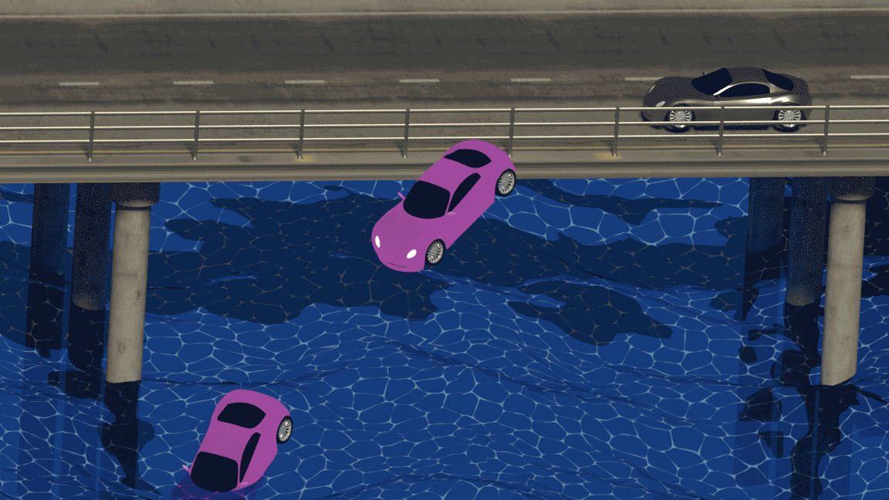

"L'appel du vide" (The call of the void) is best described as the urge to do the wrong thing in a given situation, simply because it is possible for wrong to be done. Sudden thoughts about leaping off a building, defacing art in a museum, driving your car off a bridge, not because one wants these things to happen, but because one suddenly realizes how easy it could be for these things to happen.
"The Call" is a set of 3D animations created to depict this complex feeling and idea; and while the feeling is generally fleeting, these animations loop continuously, suspending the sensation.
Created in Blender and compiled in Photoshop. 2017.